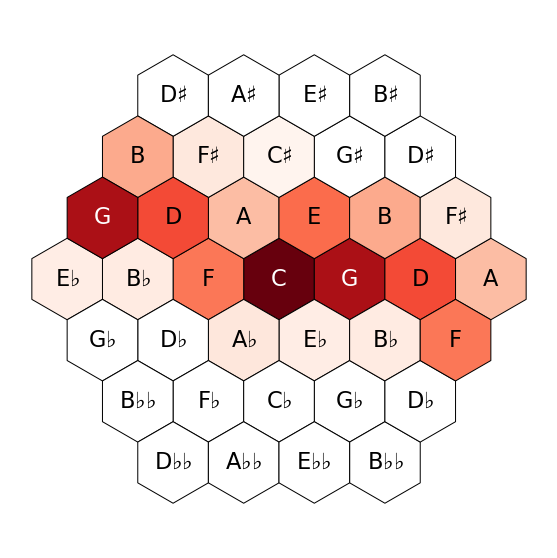
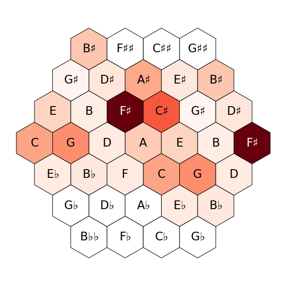
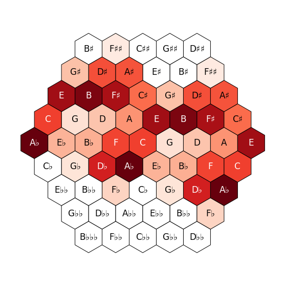
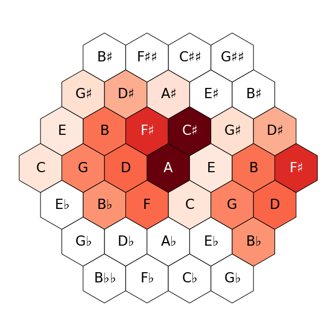
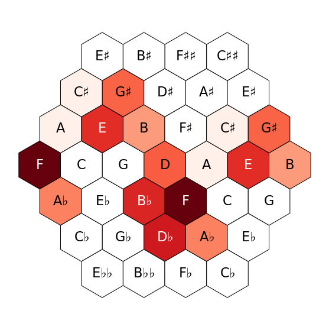
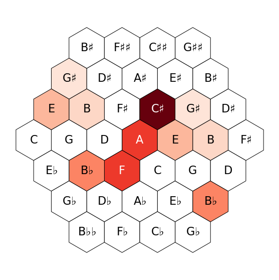
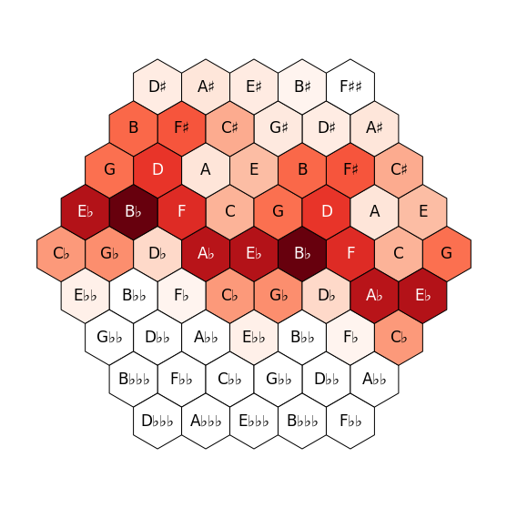

[1]:
import matplotlib.pyplot as plt
from pitchplots.parser import xml_to_csv
from pitchplots.static import tonnetz
import pandas as pd
[2]:
kws = {
"colorbar" : False,
"cmap" : "Reds",
# "duration" : True,
"edgecolor" : "k",
"hex_size" : 1,
"figsize" : (10,10),
"fontsize" : 2,
"show" : True,
"nan_color" : "w"
}
[118]:
bach = "./bach.musicxml"
csv = xml_to_csv(bach)
Bach C Major Prelude¶
[119]:
fig = tonnetz(csv, **kws, center="C", duration=True, log=False)
fig.savefig("img/bach.pdf")

Scriabin Prelude op. 72/2¶
[120]:
scriabin = "./scriabin_74_2.musicxml"
csv = xml_to_csv(scriabin)
[121]:
fig = tonnetz(csv, **kws, center="A", duration=True)
fig.savefig("img/scriabin.pdf")

Liszt, Lugubre gondola I¶
[122]:
liszt = "./liszt.musicxml"
liszt= xml_to_csv(liszt)
liszt =liszt[liszt.note_name.notnull()]
liszt["tpc"] = liszt["tpc"].str.replace("x", "##")
[123]:
fig = tonnetz(liszt, duration=False, log=False, **kws, center="C", radius=4)#, colorbar=False, cmap="Reds",duration=True, edgecolor="k", hex_size=1, figsize=(10,10), fontsize=2, show=True, log=False,center="A")
fig.savefig("img/liszt.pdf")

Liszt, RW Venezia¶
[19]:
rw = "./liszt_RW_venezia.xml"
csv = xml_to_csv(rw)
fig1 = tonnetz(csv, **kws, measures=[1,27], duration=True)
fig1.savefig("./../../teaching_slides/img/RW1.pdf")

[20]:
fig2 = tonnetz(csv, **kws, measures=[30,41], duration=False, center="D")
fig2.savefig("./../../teaching_slides/img/RW2.pdf")

[45]:
fig3 = tonnetz(csv, **kws, measures=[42,49], duration=False, center="A")
fig3.savefig("./../../teaching_slides/img/RW3.pdf")

Schubert op. 90/2¶
[3]:
schubert = "./Schubert_90_2.0_0.0.xml"
[4]:
csv = xml_to_csv(schubert)
[11]:
fig4 = tonnetz(csv, **kws, duration=False, center="Eb", radius=4)

[12]:
fig4.savefig("./../img/Schubert_90_2.pdf")
[ ]: